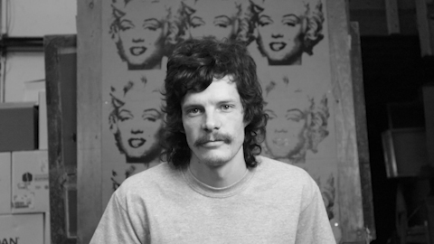

Brendan Wilson
Graphic Designer | Motion Designer
Professional Profile
Multidisciplinary graphic and motion designer with experience in visual identity, branding, digital campaigns, animation, video production and print design. Combines creative concept development with extensive hands-on production expertise. Experienced in collaborating with creative teams, managing projects and delivering polished work across digital and physical media.
Core Skills
Design: Brand identity, logo development, typography, layout, visual storytelling, campaign design, digital assets and print production.
Motion & Video: Motion graphics, 2D and 3D animation, compositing, video editing, visual effects, green-screen production and rotoscoping.
Software: Adobe Illustrator, Photoshop, InDesign, After Effects, Cinema 4D and Blender.
Professional Experience
Freelance Graphic & Motion Designer
2014–PresentIndependent | Ottawa, Ontario
- Developed visual identities, brand guidelines, marketing materials and digital assets for businesses and organizations.
- Led the Enviro-Stewards rebrand, including logo development, brand identity and supporting visual materials.
- Produced video campaigns for Ener-C, managing creative development, filming, editing, motion graphics and visual effects.
- Managed client projects from concept and creative development through production and final delivery.
Motion Designer
2016–2017McMillan Advertising
- Produced motion graphics and visual content for television, digital advertising and branded video campaigns.
- Created animated graphics, compositing effects, green-screen keying, rotoscoping and video edits.
- Collaborated with designers and creative teams to develop and execute multimedia projects.
- Joined as a co-op student and transitioned into a full-time motion design position.
Shop Manager
2023–2025Black Sheep Designs
- Helped establish a new screenprinting operation, including equipment setup, production workflows and staff training.
- Oversaw daily operations, quality assurance and production efficiency.
Education & Recognition
Graphic Design Diploma with Honours
Algonquin College
Recipient of the Bruce Rawlings Award for academic and creative excellence.
Professional Pattern Making
Richard Robinson Academy of Fashion Design